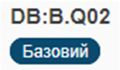
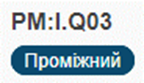

|
<< Click to Display Table of Contents >> Navigation: 1. Про нетехнічне оцінювання операційної стійкості та практик кібербезпеки організації CISA Cyber Resilience Review > 1.2. Складові оцінювання готовності до впливу програм-вимагачів. Цілі та практики |
Оцінювання готовності до впливу програм-вимагачів представляє один домен і складається з десяти цілей і практик, які відповідають кожній цілі.
Практики поділяються на три рівні:
•базовий [Basic, B],
•середній [Intermediate, I] та
•високий [Advanced, A].
Організаціям, які не знайомі з впливом програмами-вимагачами, необхідно почати впроваджувати базові заходи кібергігієни для захисту від загроз, пов'язаних з ними, тобто слід зосередитися на виконанні практик базового рівня. Після завершення базового рівня вдосконалення, організаціям, які прагнуть ще більше поліпшити свою систему управління ризиками від впливу програм-вимагачів, слід впровадити проміжний рівень практик - середній. Організаціям, які вже впровадили практики RRA базового та проміжного рівнів і прагнуть покращити своє реагування на загрози з боку програм-вимагачів, слід зосередитися на впровадженні практик високого рівня.
RRA практики та рівні (базовий, середній, поглиблений) призначені для того, щоби:
•допомогти організації зрозуміти її поточний стан готовності до протидії загрозі програм-вимагачів
•допомогти організації у впровадженні цілеспрямованого шляху до покращення її захисту від атак програм-вимагачів.
Запитання відповідного опитувальника відповідають наступним цілям:
1.Надійне резервне копіювання/Robust Data Backup, (DB)
2.Управління веб-браузерами та DNS-фільтрація/Web Browser Management and DNS Filtering, (BM)
3.Запобігання фішингу та поінформованість/Phishing Prevention and Awareness, (PP)
4.Моніторинг периметра мережі/Network Perimeter Monitoring, (NM)
5.Управління активами/Asset Management, (AM)
6.Управління виправленнями та оновленнями/Patch and Update Management, (PM)
7.Управління користувачами та доступом/User and Access Management, (UM)
8.Цілісність застосунків та список дозволів/Application Integrity and Allow list, (AI)
9.Реагування на інциденти/Incident Response, (IR)
10. Управління ризиками/Risk Management, (RM)
Кожне запитання містить ідентифікатор, структурований наступним чином:
Ціль [GG]:Рівень [B,I,A].Номер запитання [Q##]
Наприклад: AM:I.Q03
•ціль: АМ - Управління активами
•рівень: базовий, середній, високий
•запитання: №3
Синій овал під кожним ідентифікатором вказує на рівень запитання.
 
Кожне запитання практики містить шкалу відповідей "ТАК/НІ" для оцінювання того, чи впровадила організація кожну з відповідних практик:
Так - організація повністю виконує діяльність, зазначену в запитанні.
Ні - організація не виконує діяльність у повному обсязі.
підготовлено у редакторі Help & Manual 9.3.0